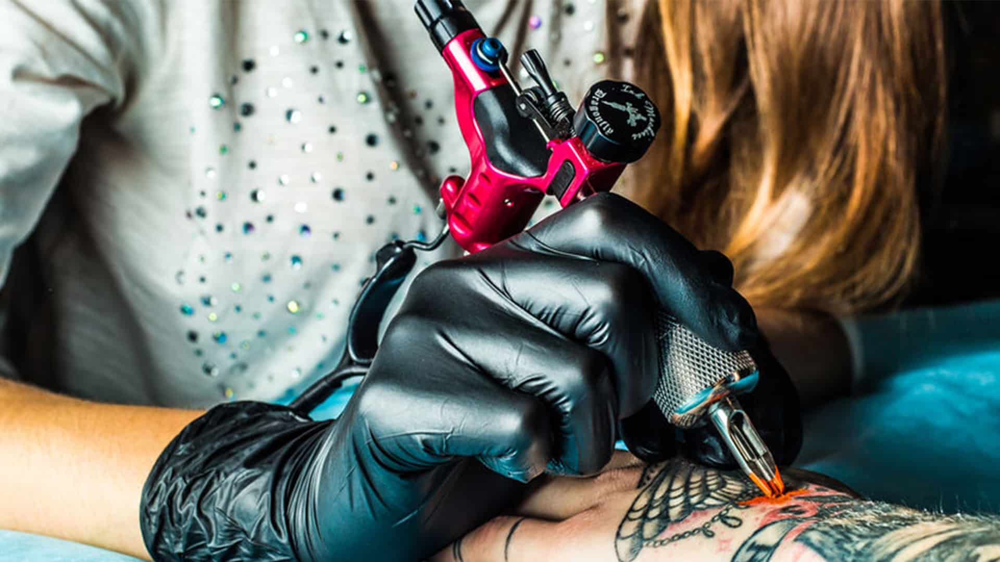
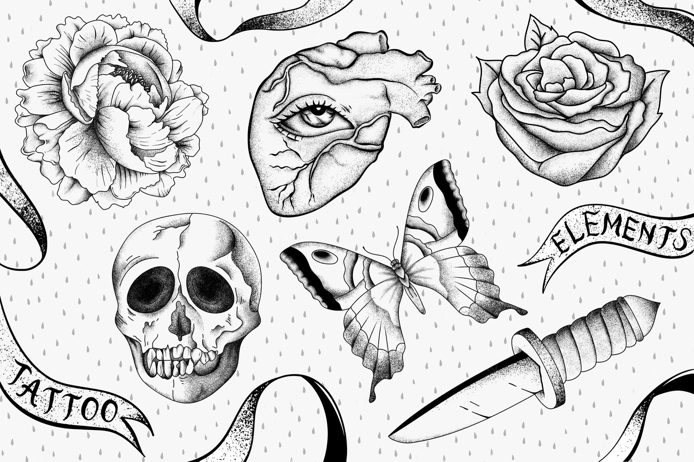
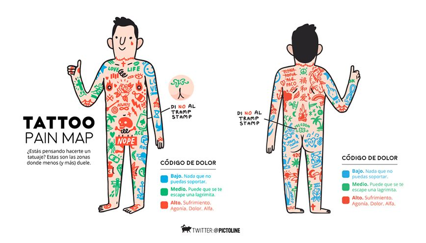
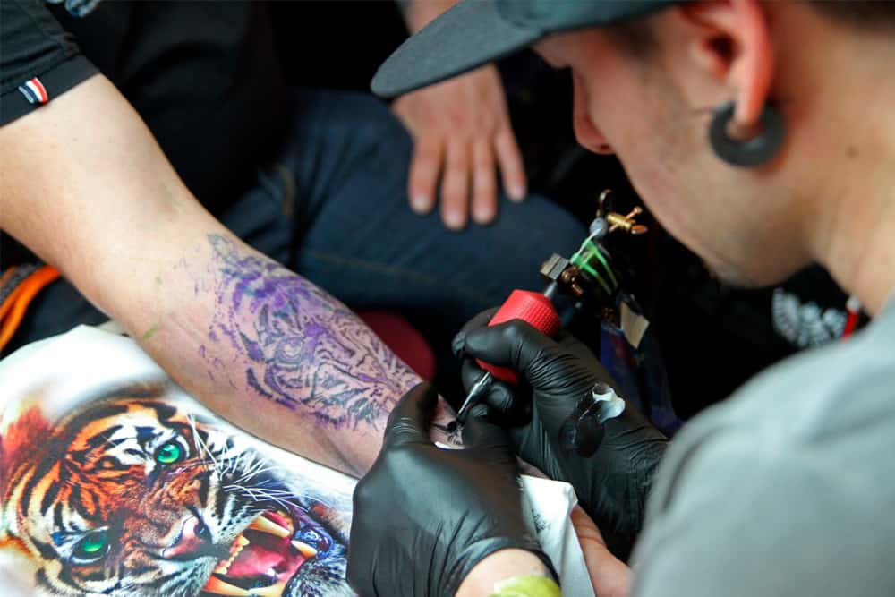

A CONSIDERAR
Previo a realizar mi primer tatuaje

Es Importante considerar que no es una decisión sencilla, ya que, un tatuaje no es algo temporal,
no es algo que vaya a desaparecer rapidamente y por el cual existe un grado de dolor que soportarás mientras
se está realizando, es por eso que se recomienda elegir un diseño que te guste, con un tatuador que te transmita
confianza.
ELECCION DISEÑO
Existen diseños infinitos y una gran variedad de estilos

Una de las decisiones mas importantes a tomar a la hora de tatuarse es la elección de diseño, el cual puede ser algo que te imaginaste,
algo que te guste, de cualquier cosa, pero debes tener claro que lo llevarás para siempre en tu piel.
Junto con esto, el estilo es muy importante, ya que existen tatuadores que se especializan en ciertos estilos y otros que realizan diferentes estilos
es por eso que en nuestro sitio tenemos un apartado de diferentes estilos para que te informes y elijas cual estilo es mas de tu gusto
, además es importante que sepas que hay zonas del cuerpo donde duelen mas o duelen menos, las reconocidas zonas de dolor.

ELECCION TATUADOR
Zapatero a tus zapatos

Una vez ya elegido el diseño, es muy importante que el tatuador maneje ese estilo para una correcta ejecucion, es decir, un tatuador especializado en animación o old traditional
claramente se verá dificultado en realizar retratos, o puntillismo ya que no es su fuerte, junto con esto, el tatuador te tiene que transmitir la confianza suficiente,
ya que estaras a su disposición minimo una hora, además debes asegurarte que tenga sus implementos en perfecto estado, y tome las precauciones necesarias(agujas en buen estado, tintas sin vencer y reguladas, guantes, entre otros).